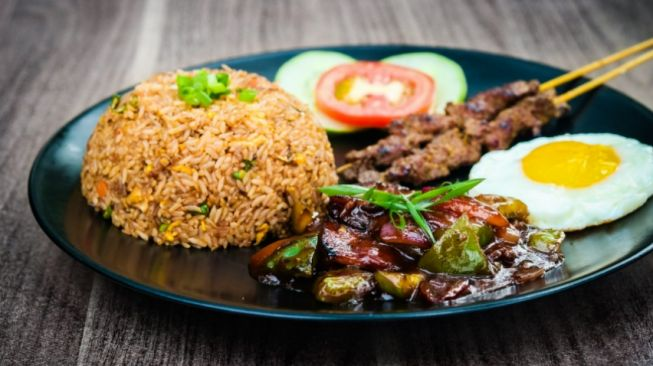
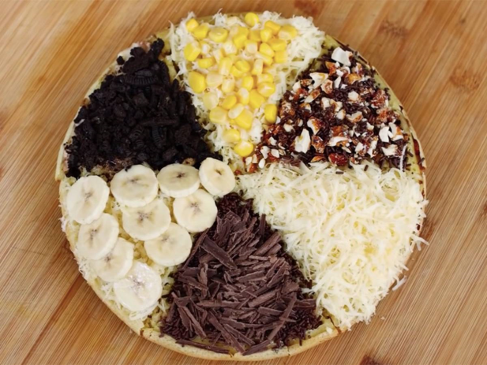
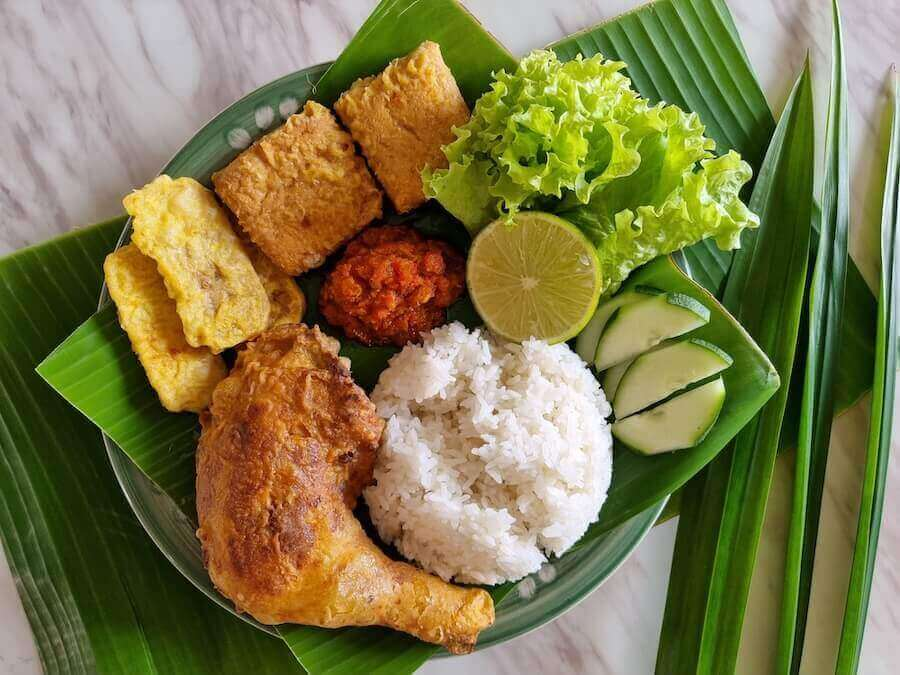
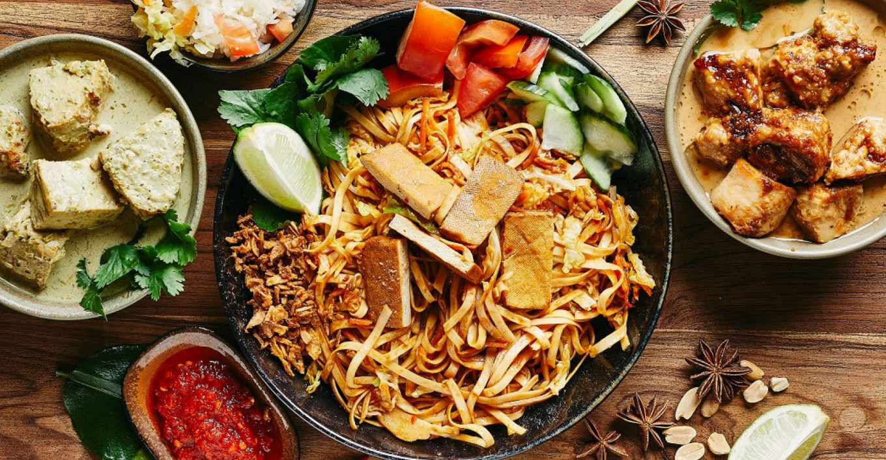
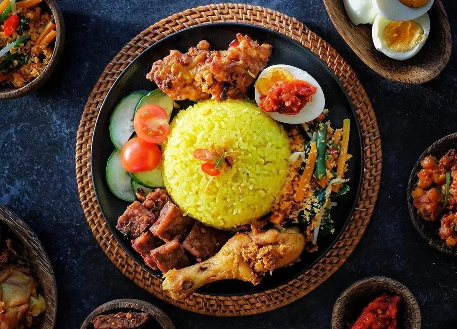
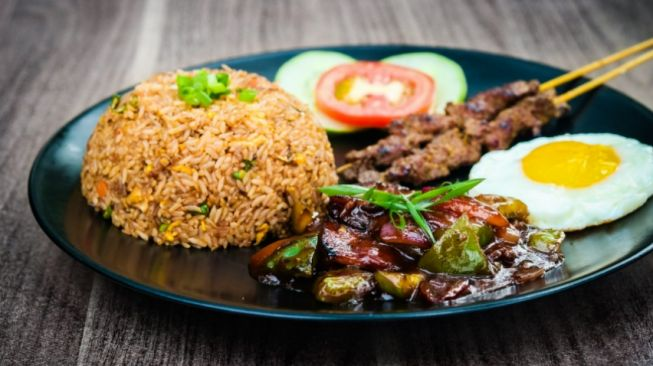
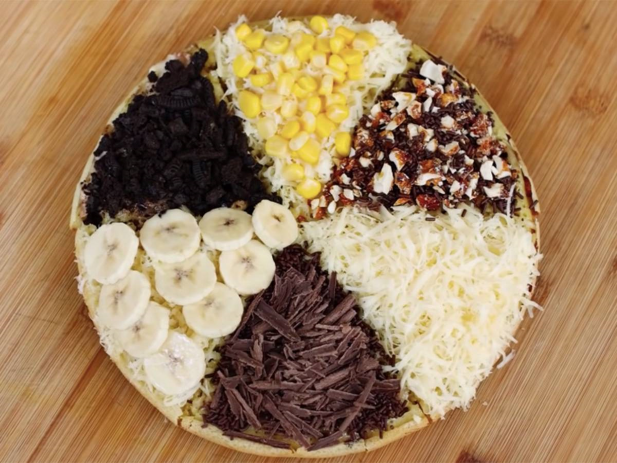
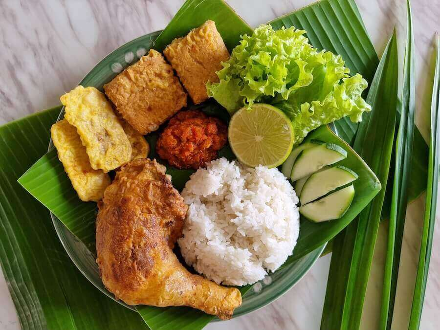
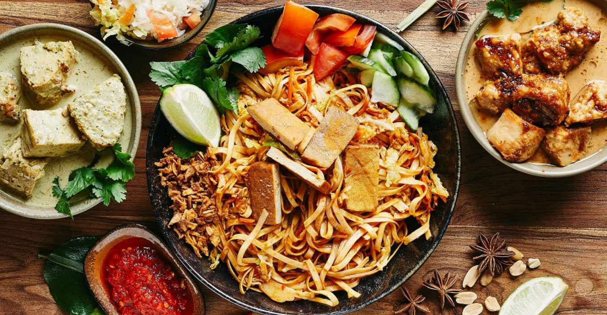
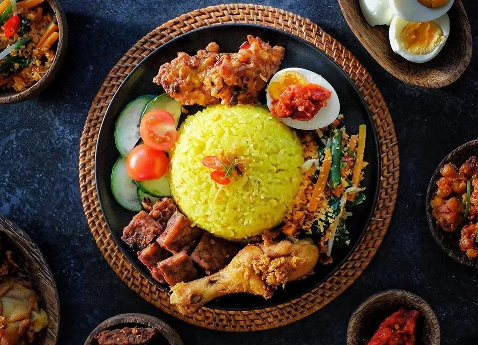

Masak ane enak poll mas,ngepas bar main ko arab aku langsung mrene mergo wenak wenak pol,murah sisan
 Cristiano Ronaldo
Cristiano Ronaldo
Tempatnya bersih,menu makanan dengan harga terjangkau tetapi kualitas bintang 5,pokoknya the best. jadi gak sabar ajak istri messi sama neymar arisan disini
Georgia Rodriguez